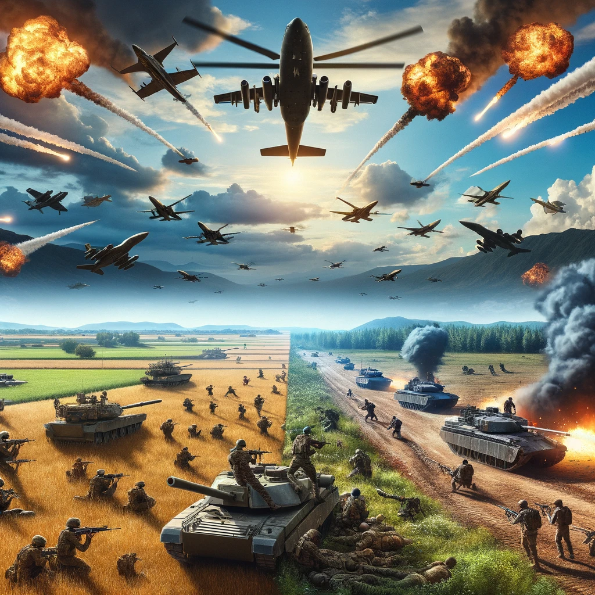
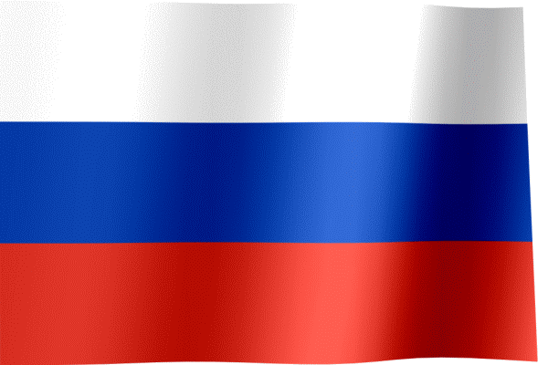
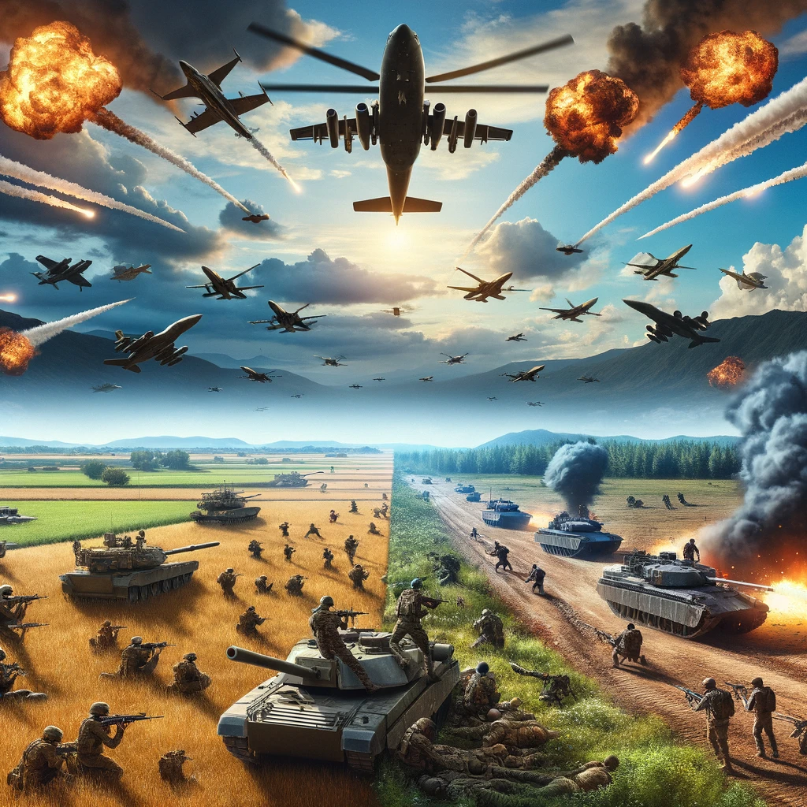
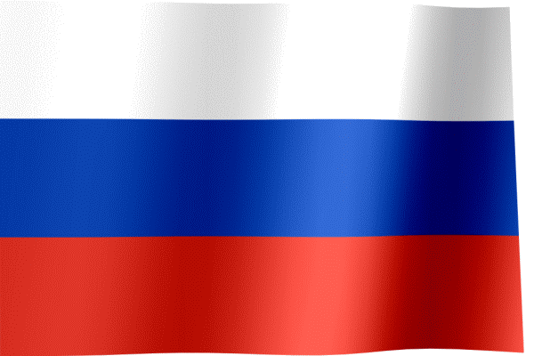

Ukraine Conflict: A background
The Ukraine War has unfolded not only on the ground but also across the digital landscape, with Twitter emerging as a critical platform for engagement and discourse. A project aimed at analyzing Twitter user engagement through the lens of language used offers an insightful window into the digital heartbeat of this conflict. By examining tweets, retweets, and replies, researchers can gauge the pulse of global sentiment, identify shifts in public opinion, and explore the power of words in shaping the narrative of the war. This project will delve into the nuances of communication, investigating how specific terms, hashtags, and phrases correlate with spikes in user interaction and engagement. The objective is to understand the complex interplay between language and its capacity to mobilize, inform, and influence the broader Twitter community.
In the theater of social media, the Ukraine War has highlighted the profound impact of real-time, user-generated content on public perception. As events unfolded, Twitter users became inadvertent war correspondents, their language painting vivid pictures of the crisis. Through this project, we aim to dissect how the language of tweets reflects the evolving realities of the war and resonates with the emotions and experiences of those affected. By mapping language patterns against key events, the project seeks to reveal how digital solidarity and advocacy can arise in times of conflict. It will also address how misinformation can spread, potentially influencing public opinion and engagement. The project's findings will illustrate how the collective voice on Twitter can amplify personal stories and bring international attention to the humanitarian aspects of the conflict.
Ultimately, this project is not just about linguistic analysis; it's about connecting the digital echo to the physical events that trigger it. The war's impact on individuals—those displaced, those fighting, and those advocating for peace—transcends borders and enters the global consciousness through tweets. By studying the intersection of language use on Twitter and its impact on engagement, we aim to offer a multidimensional perspective on the war's influence on human lives. This endeavor will contribute to understanding how digital platforms can serve as barometers for societal and emotional climates during crises. It will also provide valuable insights into the role of social media in modern conflict, offering lessons for future humanitarian communications and digital diplomacy strategies..
 


